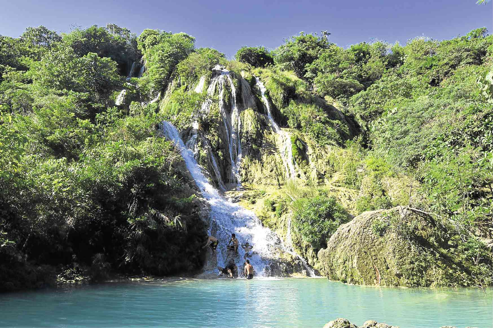

Falls

Busay Falls
Nov 12
Busay Falls is the newly introduced tourist attraction in the town of Bani, Pangasinan. This is one of Bani’s most adventurous attraction. The half-hour trek leads you through the woods to the 40-foot water falls where you can swim at the bottom pool.
Continue reading
Placeholder
Beach
Surip
Surip Beach boasts clear waters that house a diverse marine ecosystem meant to be seen by those interested in snorkelling and scuba diving. Visitors can set up camp for free while cottage rental rates vary from one resort to another.
Continue reading